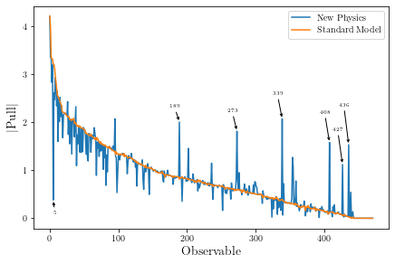
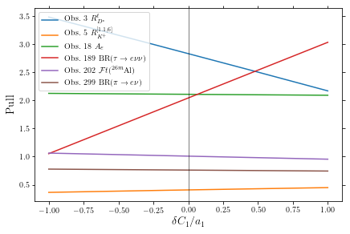
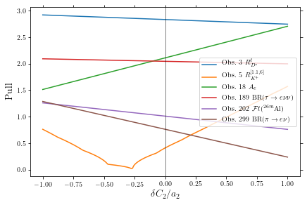
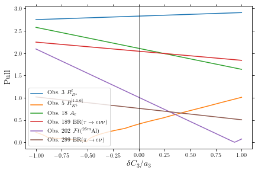
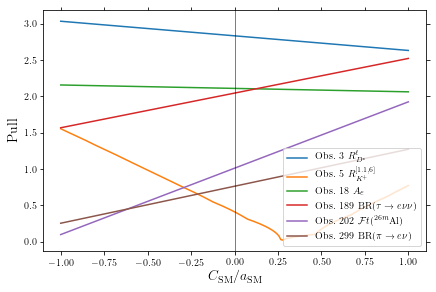

04: Scenario VII¶
In this notebook we take a closer look at Scenario VII and the neighborhood of the best-fit point. The contents of this notebook are used in Section 6.3.1.
import SMEFT19
from SMEFT19.scenarios import scVII
import numpy as np
from flavio.statistics.functions import delta_chi2
dVII = SMEFT19.ellipse.load('../data/ellipses/scVII.yaml')
bfVII = dVII['bf']
vVII = dVII['v']
diagVII = dVII['d']
LVII = dVII['L']
Hessian Matrix and rotation¶
Hessian matrix
H = vVII @ diagVII @ vVII.T
H
matrix([[ 3.07343695e+02, 5.67414678e+01, -1.67554446e-01],
[ 5.67414678e+01, 6.69617869e+02, -6.39211370e+00],
[-1.67554446e-01, -6.39211370e+00, 2.84657606e+01]])
Semi-axes of the ellipse
a = np.sqrt(delta_chi2(1,3)/np.diag(diagVII))
a
array([0.35238418, 0.10866589, 0.0721036 ])
Rotation matrix
vVII
matrix([[ 0.00145321, 0.98850595, -0.15117499],
[-0.01009681, -0.15115294, -0.98845882],
[-0.99994797, 0.00296282, 0.0097611 ]])
Extrema of the ellipse
p1p = bfVII + a[0]*np.array(vVII[:,0]).flatten()
l1p = -2*(SMEFT19.likelihood_global(p1p, scVII) + LVII)
print(f'{p1p}\t{l1p}')
[-0.14921456 0.14609287 -0.62186569] 3.352163783869152
p1m = bfVII - a[0]*np.array(vVII[:,0]).flatten()
l1m = -2*(SMEFT19.likelihood_global(p1m, scVII) + LVII)
print(f'{p1m}\t{l1m}')
[-0.15023873 0.15320878 0.08286601] 3.39035351767415
p2p = bfVII + a[1]*np.array(vVII[:,1]).flatten()
l2p = -2*(SMEFT19.likelihood_global(p2p, scVII) + LVII)
print(f'{p2p}\t{l2p}')
[-0.04230977 0.13322566 -0.26917788] 4.2877067971896565
p2m = bfVII - a[1]*np.array(vVII[:,1]).flatten()
l2m = -2*(SMEFT19.likelihood_global(p2m, scVII) + LVII)
print(f'{p2m}\t{l2m}')
[-0.25714353 0.16607599 -0.2698218 ] 4.43567222411415
p3p = bfVII + a[2]*np.array(vVII[:,2]).flatten()
l3p = -2*(SMEFT19.likelihood_global(p3p, scVII) + LVII)
print(f'{p3p}\t{l3p}')
[-0.16062691 0.07837939 -0.26879603] 3.70721785960432
p3m = bfVII - a[2]*np.array(vVII[:,2]).flatten()
l3m = -2*(SMEFT19.likelihood_global(p3m, scVII) + LVII)
print(f'{p3m}\t{l3m}')
[-0.13882639 0.22092226 -0.27020365] 3.9698051457436208
Extreme values of each coefficient
a_coeff = np.sqrt(delta_chi2(1,3)/np.diag(H))
a_coeff
array([0.10712099, 0.07257269, 0.35198597])
pep = bfVII + np.array([a_coeff[0],0,0])
lep = -2*(SMEFT19.likelihood_global(pep, scVII) + LVII)
print(f'{pep}\t{lep}')
[-0.04260565 0.14965083 -0.26949984] 4.066948201144271
pem = bfVII - np.array([a_coeff[0],0,0])
lem = -2*(SMEFT19.likelihood_global(pem, scVII) + LVII)
print(f'{pem}\t{lem}')
[-0.25684764 0.14965083 -0.26949984] 4.172186500550637
pmup = bfVII + np.array([0,a_coeff[1],0])
lmup = -2*(SMEFT19.likelihood_global(pmup, scVII) + LVII)
print(f'{pmup}\t{lmup}')
[-0.14972665 0.22222352 -0.26949984] 4.0763352184390484
pmum = bfVII - np.array([0,a_coeff[1],0])
lmum = -2*(SMEFT19.likelihood_global(pmum, scVII) + LVII)
print(f'{pmum}\t{lmum}')
[-0.14972665 0.07707813 -0.26949984] 3.784302538404141
ptaup = bfVII + np.array([0,0,a_coeff[2]])
ltaup = -2*(SMEFT19.likelihood_global(ptaup, scVII) + LVII)
print(f'{ptaup}\t{ltaup}')
[-0.14972665 0.14965083 0.08248613] 3.3907185950610277
ptaum = bfVII - np.array([0,0,a_coeff[2]])
ltaum = -2*(SMEFT19.likelihood_global(ptaum, scVII) + LVII)
print(f'{ptaum}\t{ltaum}')
[-0.14972665 0.14965083 -0.6214858 ] 3.348779063033696
SM direction
a_SM = np.sqrt(delta_chi2(1,3)/(bfVII @ H @ bfVII))[0,0]
a_SM
0.4011753357898123
pSMp = bfVII*(1+a_SM)
lSMp = -2*(SMEFT19.likelihood_global(pSMp, scVII) + LVII)
print(f'{pSMp}\t{lSMp}')
[-0.20979328 0.20968705 -0.37761653] 4.693637892371026
pSMm = bfVII*(1-a_SM)
lSMm = -2*(SMEFT19.likelihood_global(pSMm, scVII) + LVII)
print(f'{pSMm}\t{lSMm}')
[-0.08966001 0.08961461 -0.16138315] 4.290914627715015
Observables¶
from SMEFT19.plots import compare_plot
compare_plot(scVII, '../data/ellipses/scVII.yaml', '../data/plots/pullsVII')

SMEFT19.comparepulls.compare(scVII, '../data/ellipses/scVII.yaml', '../data/TeX/pullsVII' )
Largest pull differences¶
SMEFT19.comparepulls.notablepulls(scVII, '../data/ellipses/scVII.yaml')
Operator 1+
**********************
5 ('<Rmue>(B+->Kll)', 1.1, 6.0) 1.047047303958045
18 A(Z->ee) 0.4715343930119273
58 m_W 0.4101674193073143
15 AFB(Z->bb) 0.34506594275712094
272 GammaZ 0.2736148730604824
Operator 1-
**********************
5 ('<Rmue>(B+->Kll)', 1.1, 6.0) 1.0574043571326897
18 A(Z->ee) 0.47067314854461845
58 m_W 0.410169133754074
15 AFB(Z->bb) 0.3445742790040408
272 GammaZ 0.2740356795426639
Operator 2+
**********************
202 Ft(26mAl) 1.219473075171127
339 Ft(34Cl) 0.6749305550318184
436 Ft(38mK) 0.5709724308787687
145 Ft(46V) 0.5499316837263112
5 ('<Rmue>(B+->Kll)', 1.1, 6.0) 0.5447533635561222
Operator 2-
**********************
202 Ft(26mAl) 1.2172939145999349
339 Ft(34Cl) 0.6737244750586382
436 Ft(38mK) 0.5699521208498426
145 Ft(46V) 0.5489489728601077
5 ('<Rmue>(B+->Kll)', 1.1, 6.0) 0.520193293135291
Operator 3+
**********************
189 BR(tau->enunu) 0.9974253920008658
38 BR(tau->mununu) 0.9671433220556171
354 sigma_had 0.6863489881909502
3 Rtaul(B->D*lnu) 0.42462033122915777
72 Rtaul(B->Dlnu) 0.15349094753397646
Operator 3-
**********************
189 BR(tau->enunu) 0.9945541390912793
38 BR(tau->mununu) 0.9643626858294673
354 sigma_had 0.683668946427221
3 Rtaul(B->D*lnu) 0.4419002450199323
72 Rtaul(B->Dlnu) 0.1598326082282726
Axis 1+
**********************
189 BR(tau->enunu) 0.9766885986266233
38 BR(tau->mununu) 0.9692529999943418
354 sigma_had 0.6948295138116227
3 Rtaul(B->D*lnu) 0.4388966037166004
72 Rtaul(B->Dlnu) 0.158745199486295
Axis 1-
**********************
189 BR(tau->enunu) 0.9794825268134246
38 BR(tau->mununu) 0.9720547332247578
354 sigma_had 0.6975481312670726
3 Rtaul(B->D*lnu) 0.42191994412658923
72 Rtaul(B->Dlnu) 0.15252858831577004
Axis 2+
**********************
5 ('<Rmue>(B+->Kll)', 1.1, 6.0) 1.4028027678486763
18 A(Z->ee) 0.3553353029014595
58 m_W 0.29594825763779986
299 BR(pi+->enu) 0.2754178068815202
284 Rmue(B->D*lnu) 0.2702503872873058
Axis 2-
**********************
5 ('<Rmue>(B+->Kll)', 1.1, 6.0) 1.4505282911519382
18 A(Z->ee) 0.35476065690568914
58 m_W 0.2959493121217155
299 BR(pi+->enu) 0.2746525761359327
284 Rmue(B->D*lnu) 0.2596141650921076
Axis 3+
**********************
202 Ft(26mAl) 1.174051125608365
339 Ft(34Cl) 0.6497912860695126
436 Ft(38mK) 0.5497053102796049
145 Ft(46V) 0.5294482719070802
408 Ft(50Mn) 0.4726530083420578
Axis 3-
**********************
202 Ft(26mAl) 1.176114690170544
339 Ft(34Cl) 0.650933388182016
436 Ft(38mK) 0.5506714968222387
145 Ft(46V) 0.530378853776639
408 Ft(50Mn) 0.4734837643261531
SM+
**********************
5 ('<Rmue>(B+->Kll)', 1.1, 6.0) 1.4456709098201241
202 Ft(26mAl) 0.8337109639334289
339 Ft(34Cl) 0.4614263447716883
436 Ft(38mK) 0.39035382200673313
145 Ft(46V) 0.3759690012611898
SM-
**********************
5 ('<Rmue>(B+->Kll)', 1.1, 6.0) 1.3509121356276814
202 Ft(26mAl) 0.8324603414866149
339 Ft(34Cl) 0.4607341742602148
436 Ft(38mK) 0.38976826505339124
145 Ft(46V) 0.37540502250521496
from SMEFT19.plots import evolution_plot
evolution_plot([3, 5, 18, 189, 202, 299], scVII, '../data/ellipses/scVII.yaml', 'ax1', '../data/plots/evo_ax1',
[r'$R_{D^*}^\ell$', r'$R_{K^+}^{[1.1,6]}$', '$A_e$', r'$\mathrm{BR}(\tau\to e\nu\nu)$',
r'$\mathcal{F}t(^{26m}\mathrm{Al})$', r'$\mathrm{BR}(\pi\to e \nu)$'])

evolution_plot([3, 5, 18, 189, 202, 299], scVII, '../data/ellipses/scVII.yaml', 'ax2', '../data/plots/evo_ax2',
[r'$R_{D^*}^\ell$', r'$R_{K^+}^{[1.1,6]}$', '$A_e$', r'$\mathrm{BR}(\tau\to e\nu\nu)$',
r'$\mathcal{F}t(^{26m}\mathrm{Al})$', r'$\mathrm{BR}(\pi\to e \nu)$'])

evolution_plot([3, 5, 18, 189, 202, 299], scVII, '../data/ellipses/scVII.yaml', 'ax3', '../data/plots/evo_ax3',
[r'$R_{D^*}^\ell$', r'$R_{K^+}^{[1.1,6]}$', '$A_e$', r'$\mathrm{BR}(\tau\to e\nu\nu)$',
r'$\mathcal{F}t(^{26m}\mathrm{Al})$', r'$\mathrm{BR}(\pi\to e \nu)$'])

evolution_plot([3, 5, 18, 189, 202, 299], scVII, '../data/ellipses/scVII.yaml', 'sm', '../data/plots/evo_sm',
[r'$R_{D^*}^\ell$', r'$R_{K^+}^{[1.1,6]}$', '$A_e$', r'$\mathrm{BR}(\tau\to e\nu\nu)$',
r'$\mathcal{F}t(^{26m}\mathrm{Al})$', r'$\mathrm{BR}(\pi\to e \nu)$'])
